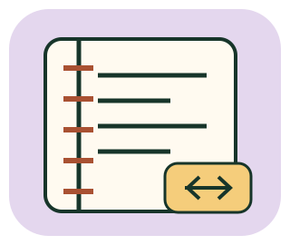

WRITE / FIND / MAINTAIN
筆記修復工坊
把「我有記」變成「下次用得上」。
親手修 Markdown，整理來源與版本，再從筆記找答案。

12 個原創任務；即時預覽使用本機 markdown-it 14.1.0（MIT），支援常用 Markdown 與表格，不是完整 GitHub 擴充語法教學。停用原始 HTML、外部圖片載入與預覽連外。所有筆記和修改只留在本分頁；「儲存」指本輪記憶體，重新整理即清空。可自行下載，不會上傳。
語法小抄與參考解法
# 一級標題、## 二級標題、1. 有序清單、- 無序清單、> 引用、[文字](note:筆記代號)。圍欄程式碼前後都要放三個反引號；子清單需縮排。先試著自己改，再參考一種可行結構。
參考解法不是唯一答案；開啟會記錄「曾看參考」。
本輪小知識庫
搜尋與切換筆記
名稱、分類、日期與來源
即時預覽
內容變更會立刻預覽，但驗收只讀已儲存版本。點選 note: 連結會開啟對應筆記。
依據與驗收
自動檢查只驗證語法結構、指定操作與連結狀態，不用字數或關鍵字宣稱你已理解內容。
修復紀錄
延伸閱讀
CommonMark 語法、markdown-it 14.1.0 與 MIT 授權。知識庫資料為教學用虛構文件，官方說明A／B是練習中的來源代號，不冒充真實官方文件。